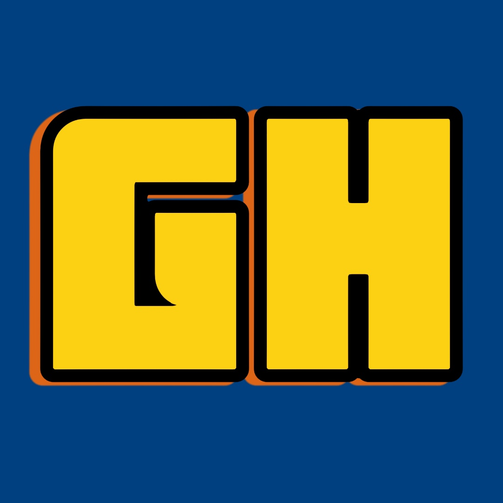

본 페이지는 SEC 13F 공시를 기반으로 구성되며, 헤지펀드 및 주요 투자 기관들의 최신 포트폴리오 정보를 제공합니다.
해당 데이터는 매 분기마다 업데이트되며, 투자 트렌드 및 종목 변화를 신속하게 반영합니다.
해당 데이터는 매 분기마다 업데이트되며, 투자 트렌드 및 종목 변화를 신속하게 반영합니다.

환영합니다, 사용자님!CEO: 워런 버핏 (Warren Buffett)
투자 성향: 장기 투자
사업 분야: 보험, 철도, 에너지, 가구, 화학제품 등
CEO: 스탠리 드라켄밀러(Stanley Druckenmiller)
투자 성향: 장기 투자, 다각화된 포트폴리오
사업 분야: 헤지펀드 운영, 투자 관리, 금융서비스 제공 등
CEO: 레이 달리오(Ray Dalio)
투자 성향: 장기 투자, 다각화된 포트폴리오, 위험 배분
사업 분야: 헤지펀드 운영, 자산운용, 경제적 자문 등
CEO: 빌 애크먼(Bill Ackman)
투자 성향: 장기 투자
사업 분야: 주식, 채권, 부동산, 토대 계약 등
CEO: 손정의(Masayoshi Son)
투자 성향: 높은 리스크, 높은 보상
사업 분야: 인공지능, 운송 서비스, 로봇, 자동화 등
CEO: 존 폴슨(John Paulson)
투자 성향: 장기 투자
사업 분야: 의료, 금융서비스, 통신서비스, 에너지 등
CEO: 아이만 알사이리(Ayman Al-Sayari)
투자 성향: 안전한 투자
사업 분야: 금융 기술, 중소기업 지원 등
CEO: 아라 D. 코헨(Ara D. Cohen)
투자 성향: 장기 투자
사업 분야: 금융 서비스, 통신 서비스, 에너지 등
CEO: 아비게일 피에르폰트 존슨 (Abigail Pierrepont Johnson)
투자 성향: 장기 투자
사업 분야: 금융 서비스 등
이처럼 투자 대가들은 서로 다른 철학과 기법을 강조하지만,
장기적 관점, 심리적 함정 경계, 철저한 분석이란 공통분모를 갖고 있습니다.
각자의 투자 성향과 목표에 따라, 이들의 원칙을 참고하여 자신만의 전략을 세울 수 있습니다.